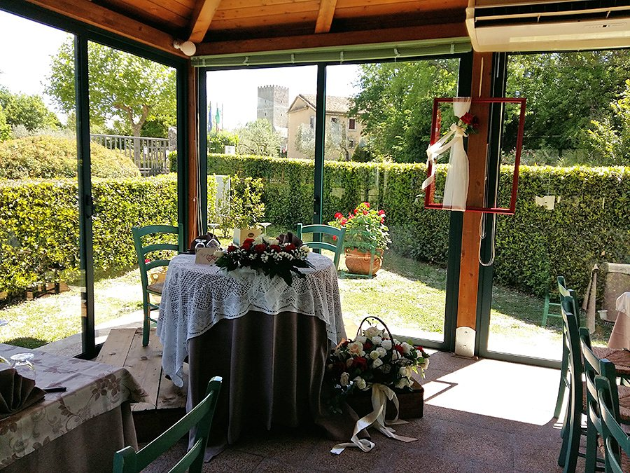
Il ristorante
Due sale a vetri, 110 posti.
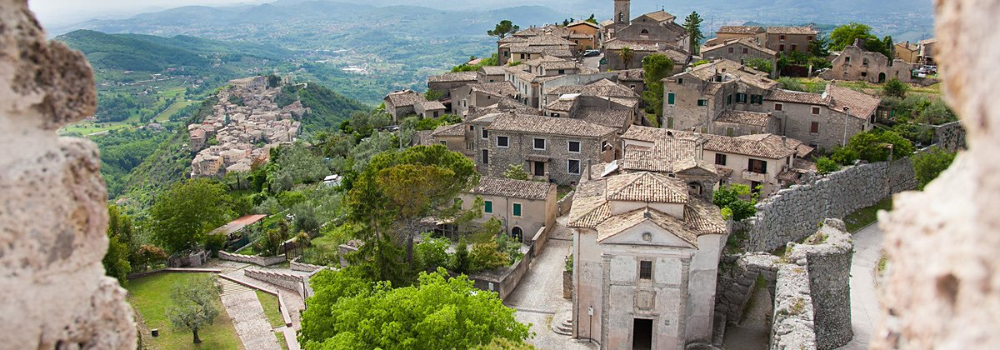
Parco Ristorante · Arpino (FR)
Due sale a vetri sotto le mura ciclopiche di Civitavecchia, a due chilometri dal centro storico di Arpino. Un ristorante, e intorno un parco.
Il posto
I Giardini dell'Acropoli sono una struttura polifunzionale creata a sostegno logistico-ricreativo del parco archeologico di Civitavecchia di Arpino. La posizione è strategica rispetto alle vestigia ciclopiche e all'ambiente naturale d'alta collina che le incornicia.
«Le superbe montagne circostanti, la sottostante Valle del Liri, le colline boschive, a sfondo dello spettacolare borgo antico chiuso tra mura ciclopiche e torri medioevali, garantiscono un panorama a 360° fortemente suggestivo.»
Sono parole loro, dal sito attuale.
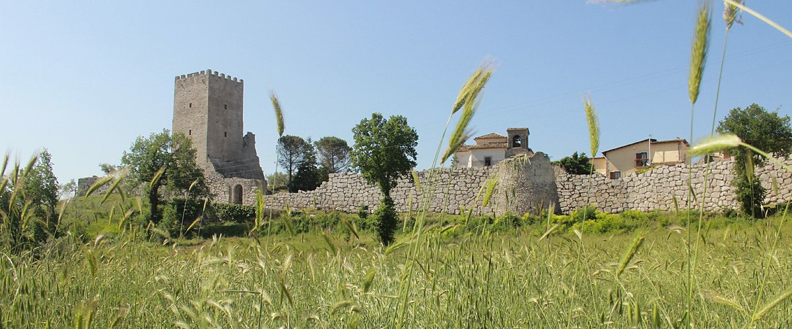
Il ristorante
La linea di cucina parte dalla tradizione e utilizza il più possibile quanto offrono la natura circostante e i produttori locali.
«Tutte le preparazioni quindi partono dall'utilizzo di materie prime genuine, selezionate quanto più possibile fra i produttori locali o direttamente prodotte da noi come l'olio extravergine, gran parte della carne ovina, liquori antichi. Così come le paste tradizionali, sia all'uovo che acqua e farina, vengono ‘fatte a mano’ con farina di piccoli mulini che macinano esclusivamente grano e granturco locali.»
In carta c'è anche un menù degustazione, che cambia ogni settimana. Per le cerimonie si concordano menù personalizzati.
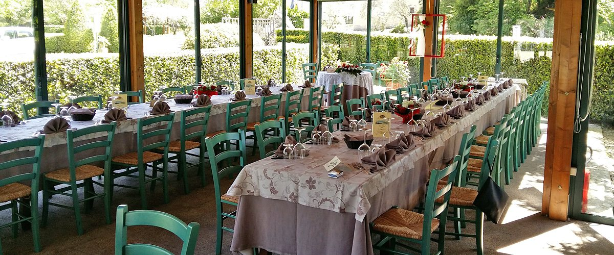
La cucina
Le didascalie dicono quello che si vede nella foto: il menù lo scrivono loro.
Cosa c'è
Sono le sei scritte nel loro marchio: bar salotto, picnic, camper, giochi, sport — e il ristorante.

Due sale a vetri, 110 posti.
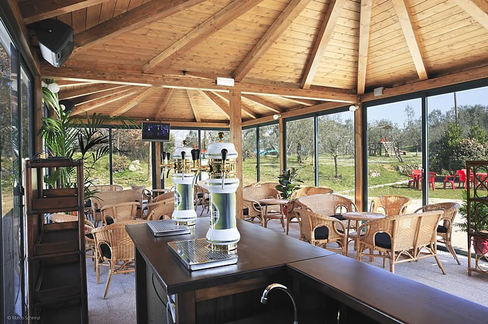
Una sala tutta a vetri, affittabile fino a 80 persone.
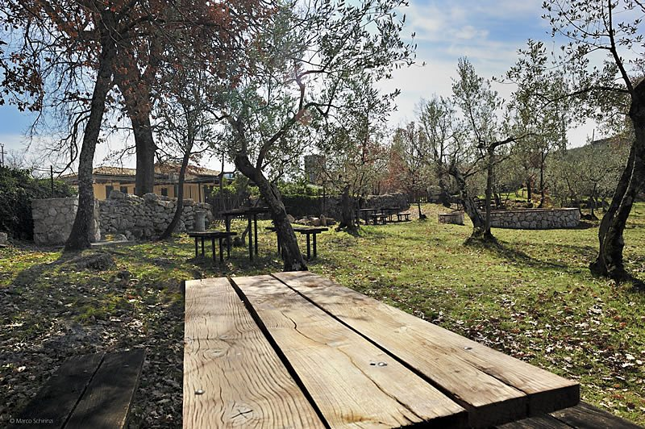
Due aree verdi con tavoli e barbecue.
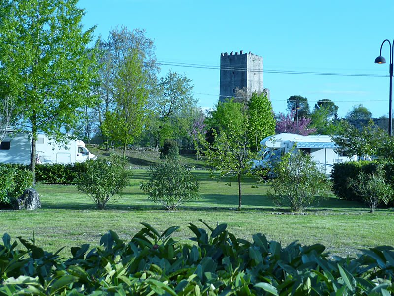
30 piazzole, illuminate di notte.
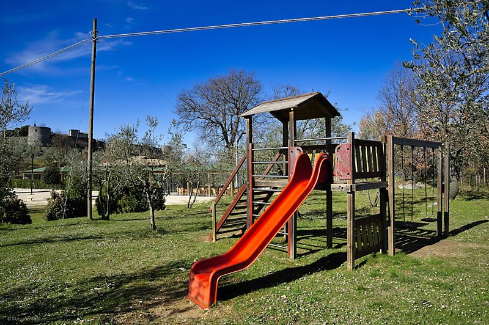
Altalene, scivoli, ponte tibetano.
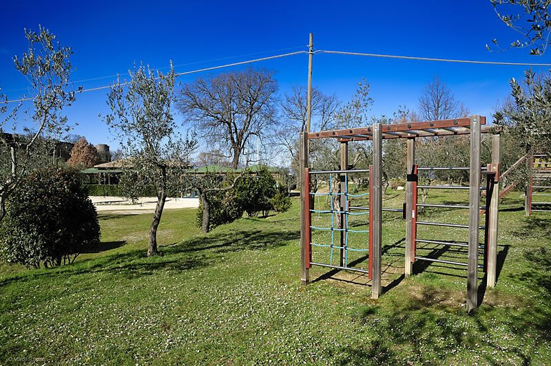
Ampi spazi verdi: pallone, pallavolo, basket.
Passa sopra un riquadro per aprirlo.
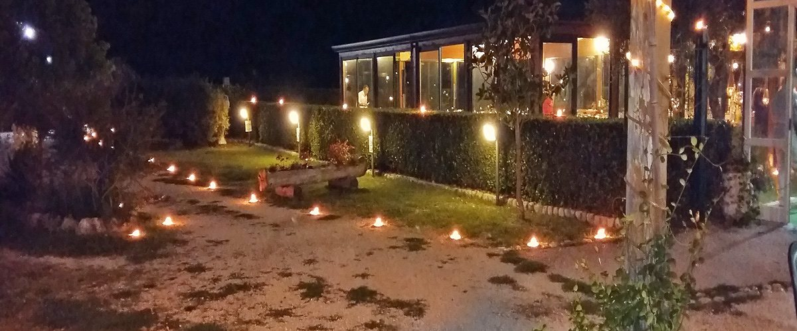
Dove siamo
Via Civitavecchia snc, sulla Strada Provinciale Arpino-Casalvieri, a due chilometri dal centro storico di Arpino.
Nel navigatore conviene inserire via San Francesco 23 e poi proseguire per un chilometro in direzione Casalvieri. Arrivati ad Arpino, si seguono le indicazioni per l'Acropoli di Civitavecchia o Mura Poligonali.
Coordinate: 41.650367, 13.618683
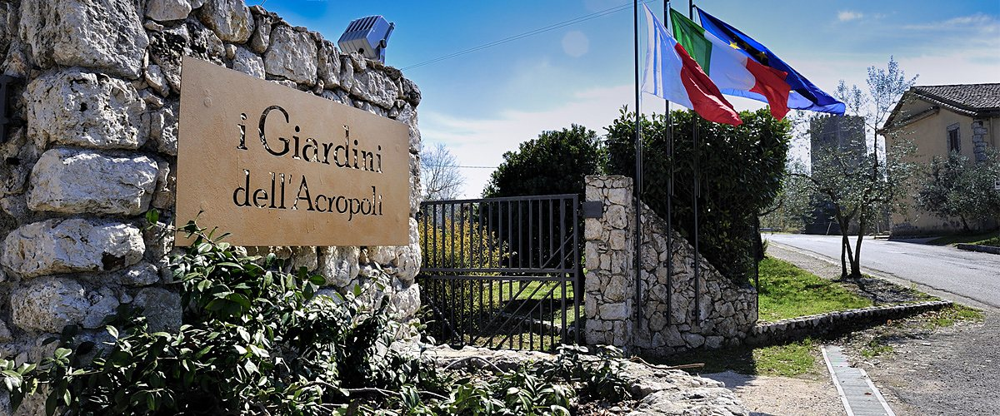
Contatti
Via Civitavecchia snc
03033 Arpino (FR)
località Civitavecchia